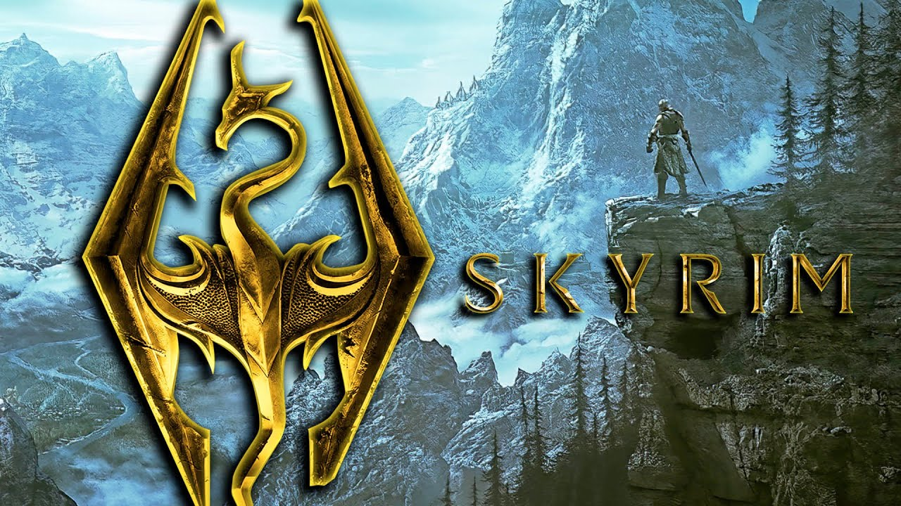
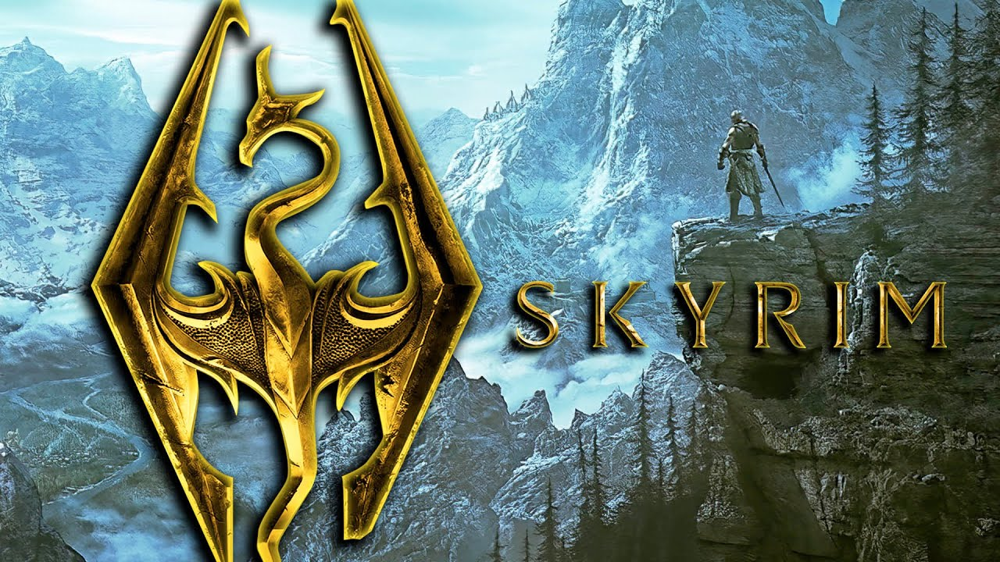

Top Open World Games in My Opinion Screenshots
The screenshots are placed in order from the least of my favorite to my most favorite. DISCLAIMER: This is MY OPINION! My list isn't factual and if you have a different opinion than this list that is okay, otherwise this is my list. Please enjoy the cool pictures of my favorite open world games! (this disclaimer isnt trying to be sassy, I just know people who would argue heavily with me. This disclaimer is not directed towards professor Burtchfield.)
- #3: Breath of the Wild
- #2: Skyrim
- #1: Red Dead Redemption 2
 
